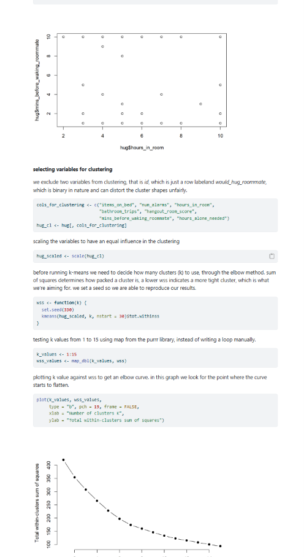
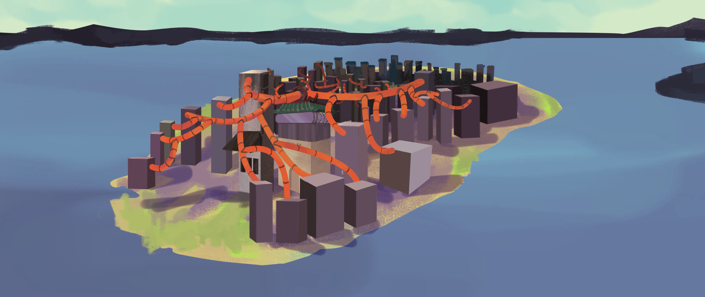
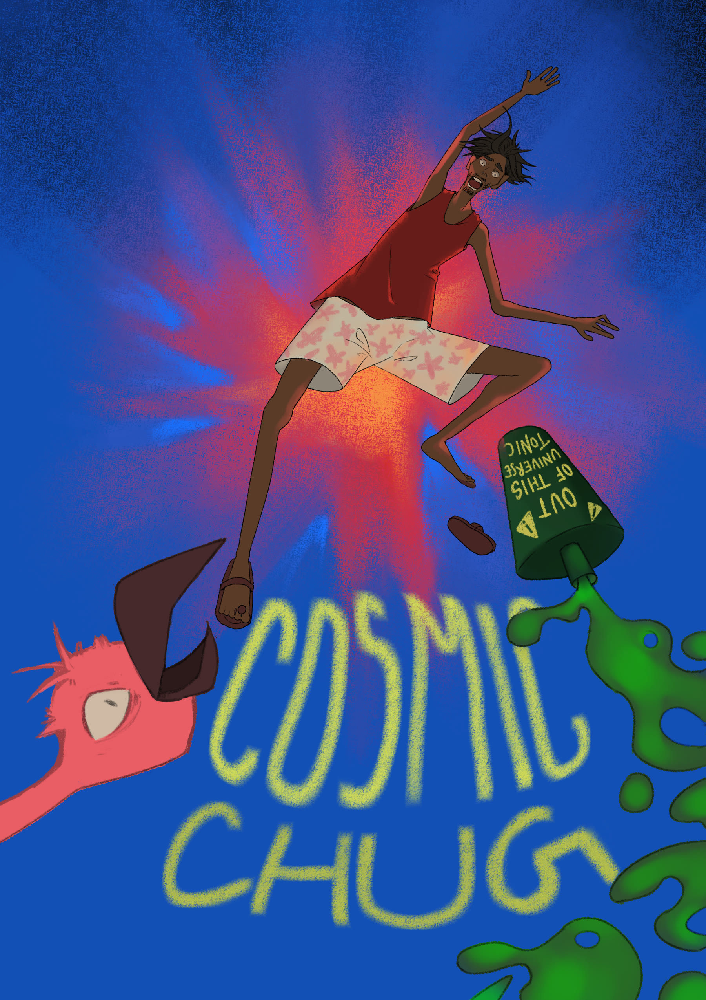
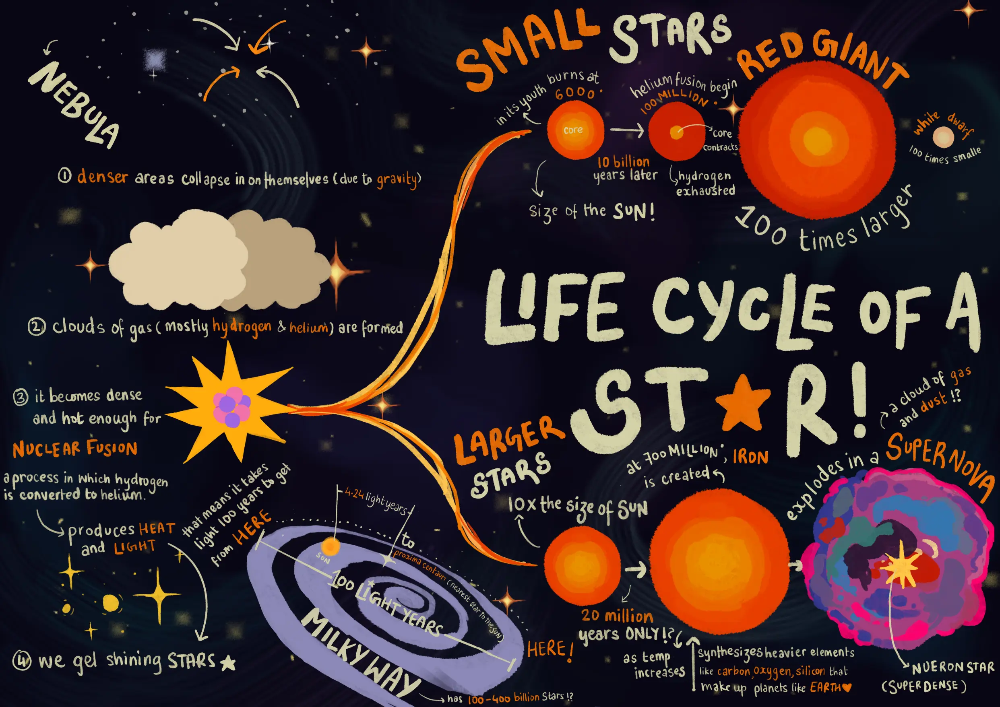
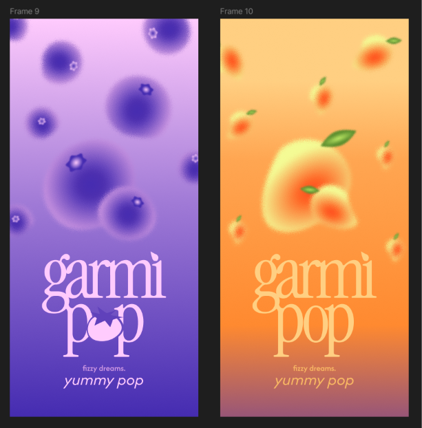
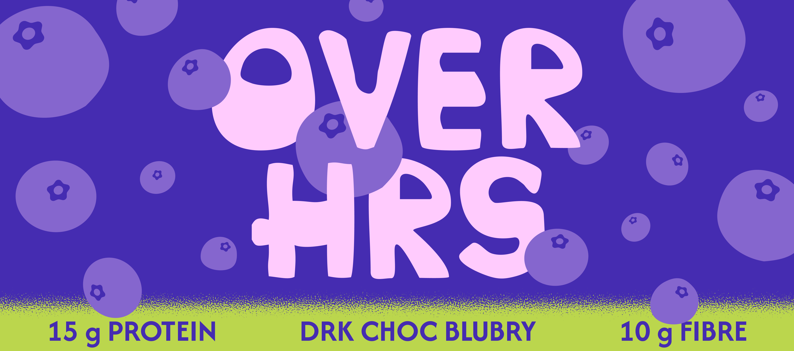

philosophy film
a short film asking whether we all exist for a reason.
 kshiraja
kshiraja
kshiraja
kshiraja
2006 · @ blr, india.
02 / little experiments
experimenting and ideating with lots of curiosity <3
philosophy film
a short film asking whether we all exist for a reason.
burger ar
a playful burger lens, made in lens studio.
dog's touch
herd campus dogs through a chaotic baking game.
audio field
an audio-reactive visualizer set to frank ocean's “nights.”
pxlfy
pixel activities: take a picture, then play.

roommate predictor
a playful compatibility model using our class survey.

concept art
a speculative island world, drawn in color and texture.

character design
quick studies in mood, silhouette, and motion.

science visualization
grounding abstract scientific concepts in illustrations

garmi pop
a bright, fizzy visual identity for a playful soda brand.
dibs!
a 2am hostel marketplace for snacks and useful finds.
cat-panion
little cat buddies to make staying focused feel a bit less lonely.
morning widget
a gentler, more personal start to the day.

over hrs
packaging for a protein bar, made to stand out.
desk cat
a very early prototype of a cat that watches the cleanliness of your desk and meows when it's messy.